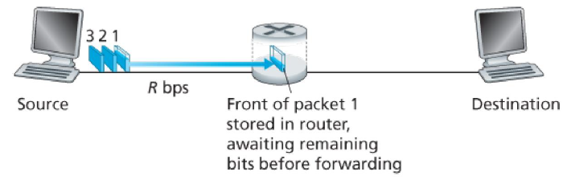

[강의정리] 데이터통신과네트워크 Computer Network and the Internet
What’s the Internet
“nuts and bolts” view

billions of connected computing devices:
- hosts = end systems
- running networks apps
communication links
- fiber, copper, radio, stellite
- transmission rate: bandwidth
packet switches: forward packets (chunks of data)
- routers and switches
Internet: “network of networks”
protocols control sending, receiving of message
- e.g., TCP, IP, HTTP, …
Internet standards
- Internet Engineering Task Force (IETF) 에서 Request for comment (RFC)라는 표준 문서들을 개발함
A service view
infrasturcture that provides services to applications:
- Web, VoIP, email, games, e-commerce, social nets, …
Socket interface
- allows sending and receiving app programs to “connect” to Internet
- provides service options, analogous to postal service
What’s a protocol?
network protocols:
- machine rather than humans
- three way handshaking
protocols define format, order of messages sent and received among network entities, and actions taken on message transmission, receipt
Network edge
A closer look at network structrue
Network edge (종단 시스템)
- hosts: clients and servers
Access networks
Access networks and pysical media
How to connect end systems to end router?
- residential(Home) access networks
- institutional access networks
- mobile access networks
keep in mind:
- bandwidth (bits per second) of access network? (속도)
- shared or dedicated? (나만쓰는가?)
Home Access
Home Access: DSL
Digital Subscriber Line (DSL)
- 전화선을 이용한 통신
Home Access: Cable Internet Access
HFC: hybrid fiber coax (동축 케이블)
Coaxial and fiber cables attach homes to ISP router
- fiber와 Coaxial 동시에 사용
Home Access: FTTH
Fiber to the home
- fiber만 사용
Home Access: A typical home network
Enterprise access
Enterprise access: Ethernet
Physical media
Physical media: Twisted-Pair Copper Wire
- Unshielded twisted pair (UTP)
- Shielded twisted pair (STP)
Pysical media: Radio
- no physical “wire”
Network core
- Mesh of interconnected routers
Packet-switching
- Message는 application이 원하는 데이터를 포함
- Message를 잘게 쪼갠게 packets
Packet들이 Communication link로 이동할때 transmission rate기반으로 이동
- 패킷의 크기는 L bits, 전송 속도는 R bits/sec
Packet-switching: Store-and-Forward
- 저장하고 전달

Ex) L = 7.5 Mbits, R = 1.5 Mbps, one-hop transmisson delay = 5 s
End to End Delay = 2L/R
3개의 패킷을 보내는 시간
- L/R시간, 첫번째 패킷이 라우터에 도착
- 2L/R시간, 첫번째 패킷이 목적지 도착, 두번째 패킷 라우터 도착
- 3L/R시간, 두번째 패킷이 목적지 도착, 세번째 패킷 라우터 도착
- 4L/R시간, 세번째 패킷이 목적지 도착
하나의 패킷을 N개의 링크가 있는 곳으로 보내는 End to End 딜레이 (N links (eash of rate R), N-1 Routers)
- Dend-to-end = N X (L/R)
Queuing Delays and Packet Loss
Queuing and Loss:
- 도착하는 패킷보다 보내는 패킷이 느릴경우
- 딜레이 + 공간 꽉차면 Loss까지 생김
Forwarding and Routing
- Forwarding: input에서 output으로 움직이는것
- Routing: 어디로 갈지 정해주는것
Circuit switching
- 데이터 회선이 정해지고 회선단위로 데이터를 주고받음
frequency-division multiplexing (FDM) - 주파수분할
time-division multiplexing (FDM) - 시분할
Silend Period -> 네트워크 자원낭비로 이어짐
Packet Switching vs. Circuit switching
Packet switching allows more user to use network
- 1 Mb/s link
- each user:
- 100 kb/s when “active”
- the probability that a specific user is active is 0.1
circuit switching:
- support only simultaneous 10 users (1 Mbs/ 100 Kbps)
Packet switching:
- With 35 users, probability > 10 active at same time is less than 0.0004
- 35C11(0.9)24(0.1)11 < 0.0004
Packet switching이 좋지만, packet delay나 loss가 발생할 수 있음
- reliable한 데이터 전송이 필요
Network of networks
- End systems은 access ISPs (Internet Service Providers)
Delay, Loss, Throughput in Networks
Four sources of packet delay
Total nodal delay (dnodal)
- nodal processing delay (dproc),
- queuing delay (dqueue),
- transmission delay (dtrans),
- propagation delay (dprop)
dproc: nodal processing
- check bit errors
- determine output link
- typically < msec
dqueue: queueing delay
- 라우터 개수에 의존
- 가장 중요
dtrans: transmission delay
- L: packet length (bits)
- R: link bandwidth (bps)
- dtrans = L/R
dprop: propagation delay
- d: length of physical link
- s: propagation speed (통신매체에 따라 다름)
- dprop = d/s
Transmission delay vs. Propagation delay
Caravan analogy
cars “propagate” at 100 km/hr
toll booth takes 12sec to service car (bit transmission time)
2번째 톨게이트까지 가는 시간?
- 첫번째 톨게이트 12*10 = 120s
- 100km 가는 시간 = 1hr
- A: 62 min
Queueing delay
- R: link bandwidth (bits / sec)
- L: packet length (bits)
- a: average packet arrival rate (packets/sec)
- La/R: traffic intersity
- La/R이 0에 가까우면: 딜레이가 거의 없음
- La/R이 1에 가까우면: queueing delay가 커짐
- La/R이 1보다 크면: 거의 무한대의 딜레이
Packet loss
- 버퍼가 가득 차면 loss 됨
End-to-End Delay
- N-1개의 라우터가 있을때
- End-to-End Delay = N x (dproc+dtrans+dprop)